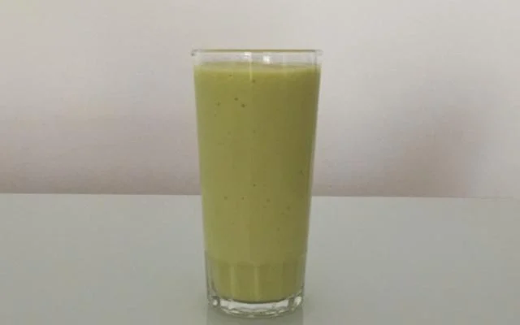

Vitamina de abacate com leite

Vitamina natural de abacate com leite
Nada como uma boa vitamina natural para um fim de tarde mais saudável.
Ingredientes
- 1 abacate grande.
- 1 litro de leite.
- 1/2 xícara de açúcar.
Modo de preparo
- Descasque o abacate e retire o caroço.
- Processe todos os ingredientes num liquidificador.
- Sirva e se delicie!
Voltar